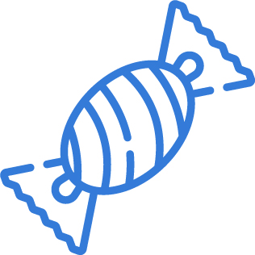

The hooked model
by Nir Eyal
Het Hook Model is een veelgebruikt model om gedragsverandering te stimuleren. Het model is bedacht door Nir Eyal en uitgelegd in zijn boek; Hooked: How to Build Habit-Forming Products. Het Hook Model is gebaseerd uit vier onderdelen; Trigger, Action, Variable Reward en Investment. Door deze vier onderdelen toe te passen op een product of dienst zorg je ervoor dat de gebruiker als het ware ‘’hooked’’ is aan hetgeen wat jij gemaakt hebt. Het zal ervoor zorgen dat er een lichte verslaving gecreëerd wordt waardoor de gebruiker constant eigenlijk maar terug komt om een nieuwe cyclus in het product of de dienst te voltooien. Door deze betrokkenheid verkrijg ook jij steeds meer nieuwe informatie die je kunt toepassen op de UX van je product of dienst om dit zo te verbeteren. Op deze pagina worden de vier onderdelen van het Hook Model uitgelicht net als drie zeer bekende praktijkvoorbeelden waarin het Hook Model is toegepast.
Trigger
De Trigger is het eerste onderdeel van het Hook Model. Een trigger kan intern of extern plaatsvinden en is bedoeld om de gebruiker er toe te zetten een handeling te voltooien in het Hook Model. Een interne trigger begint in het hoofd van de gebruiker. Dit kan bijvoorbeeld een gedachte zijn om te gaan sporten met het doel om te gaan afvallen. Ook kunnen het simpele dingen zijn zoals verveling of eenzaamheid en de wil om iets te gaan ondernemen. Bij een externe trigger is er een andere partij bij betrokken die zich richt op de gebruiker en wilt dat hij/zij een handeling gaat verrichten. Dit kan bijvoorbeeld een notificatie zijn op een smartphone, een advertentie in een krant of een filmpje op het internet. Externe triggers proberen vaak een interne trigger te creëren na de loop van tijd. Door continue de gebruiker in contact te laten komen met bijvoorbeeld een Fitness App door middel van externe triggers is het de bedoeling dat de gebruiker die triggers uiteindelijk niet meer nodig heeft om de handeling te gaan voltooien, dit gebeurt dan vanuit de intrinsieke motivatie en is het dus een interne trigger geworden.
Action
Nadat de gebruiker ‘getriggerd’ is zal deze overgaan op een actie. Deze actie kan iets heel simpels zijn zoals het openen van een app, het bezoeken van een website of het over gaan op een aankoop. Het is hierin zeer belangrijk om deze handeling zo simpel mogelijk te maken voor de gebruiker. Dit zal de stimulans om de actie te voltooien alleen maar ten goede komen. Zodra deze stap te moeilijk is gemaakt voor de gebruiker zal het voltooien van de actie vooral afhangen van de motivatie die hij/zij heeft om dit ook daadwerkelijk te doen.
Variable reward
Het derde onderdeel van het Hook Model is de Variable Reward.. Een ontzettend belangrijk onderdeel dit doordat dit het Hook Model een interessant gegeven maakt om toe te passen op je product of dienst. Bij een variable reward krijgt de gebruiker een beloning naar aanleiding van de actie die zij gedaan hebben. Het speciale aan deze beloning is dat deze elke keer anders kan zijn. Als de gebruiker gebruik maakt van een Fitness app om zijn/haar progressie bij te houden en na een aantal dagen een willekeurige beloning krijgt voor het werk wat gedaan is motiveert dit de gebruiker om dit werk te blijven verrichten om later weer een nieuwe beloning te krijgen die anders is dan de beloning die een aantal dagen hiervoor is uitgegeven. Dit kan bijvoorbeeld een kortingscode op geselecteerde webshops zijn of een aantal nieuwe functies binnenin de app. Omdat de Variable Reward een belangrijk aspect is binnenin het Hook Model wordt er later op deze pagina onder Praktijkvoorbeelden dieper op ingegaan.
Investment
Het laatste onderdeel in het Hook Model, en zeker geen onbelangrijke is het Investment gedeelte. Hierin is het van groot belang om de gebruiker terug te laten komen naar je product of dienst en opnieuw dus te ‘investeren’ hierin. Deze investering kan bestaan uit tijd die opnieuw in een app wordt gestoken maar ook in geld. Door de variable reward dusdanig interessant te maken heb je een grote kans dat de gebruiker terugkomt en opnieuw zal investeren. Hierin creëer je dus eigenlijk een cyclus voor je product of dienst. Als dit het geval is de gebruiker ‘Hooked’ en zorg je ervoor dat de gebruiker gebruik blijft maken van je product of dienst. Door de informatie die verzameld is in de vorige cyclus is het mogelijk deze informatie te gebruiken om de gebruiker weer op een andere manier te belonen en te triggeren. Hierdoor blijf je dus nieuwe informatie vergaren die nodig is om je product of dienst te blijven verbeteren.
Praktijkvoorbeelden
In het Hook Model zijn de Variable Rewards een zeer belangrijk onderdeel waarmee het zich onderscheidt van andere modellen die gedragsverandering proberen te verwerkelijken. Deze Variable Rewards kun je onderscheiden in drie categorieën:
- Tribe "Social Rewards"
Bij Tribe staat het sociale aspect centraal. De rewards die hier onder vallen zullen de gebruiker bijvoorbeeld erkenning van anderen geven of het wegnemen van verveling door contact met anderen.
- Hunt "Achievement Rewards"
Bij Hunt draait het allemaal om het belonen van gebruikers met dingen die leuk zijn om te hebben en of te gebruiken. De gebruiker investeert veel tijd of geld om deze variable reward vrij te spelen.
- Self "Completion Rewards"
Bij Self draait het vooral om het boeken van progressie. Door de investment te blijven doen zal het de gebruiker belonen met progressie in bijvoorbeeld een game.
Hieronder zijn drie praktijkvoorbeelden beschreven die sterk gebruik maken van het Hook Model. De voorbeelden zijn ingedeeld op de hierboven beschreven vormen van Variable Rewards.

Praktijkvoorbeeld 1: "Tribe" Facebook
Social Media is tegenwoordig een belangrijke factor in het dagelijkse leven van miljarden mensen. Hierin is Facebook misschien wel de grootste speler op de markt. Ook Facebook maakt gebruik van het Hook Model om gebruikers ‘hooked’ te laten worden aan hun service. Maar hoe past Facebook dit dan toe? Hieronder is een simpele uitleg gegeven per onderdeel hoe Facebook op een vrij makkelijke manier toch miljarden gebruikers ‘hooked’ laat zijn. We nemen hierin Klaas als denkbeeldig voorbeeldpersoon.
Trigger:
Klaas ligt languit op de bank en verveelt zich. Hij pakt zijn mobiel erbij en begint het nieuws te lezen. Een paar seconde later krijgt Klaas een pushbericht van Facebook dat er een reactie is geplaatst bij zijn profielfoto.
Action:
Klaas is getriggerd door dit pushbericht en opent de Facebook app om zo de reactie te bekijken, door deze simpele actie komt Klaas weer terug bij de service van Facebook.
Variable Reward:
De beloning die Klaas krijgt heeft hij eigenlijk al bij de trigger opgemerkt; de reactie op zijn profielfoto. Om deze beloning te verkrijgen moest hij wel Facebook openen. Doordat Facebook dusdanig is ingericht op het sociale aspect is het aannemelijk dat Klaas binnenin de app blijft hangen om meer dingen te lezen op zijn tijdlijn. Naast de reactie als beloning neemt het dus ook zijn verveling weg, ook dit is een vorm van een variable reward.
Investment:
Zoals hierboven al beschreven is de kans groot dat Klaas meer tijd zal spenderen op de Facebook app. Dit is een vorm van investment. Door de reactie die hij kreeg als beloning is het mogelijk dat Klaas actiever gaat zijn op Facebook en zo dus meer foto’s gaat plaatsen. Hierdoor begint weer een nieuwe cyclus waarin Klaas door middel van een nieuwe trigger weer terug komt op de service om zo zijn beloning weer op te halen. Facebook heeft door de tijd en het surfgedrag van Klaas op hun service weer nieuwe informatie verzameld waarin hun ervoor kunnen zorgen dat Klaas zijn volgende moment met Facebook weer een volledig nieuwe kan zijn en zo dus geboeid blijft met de service, Klaas is hierdoor ‘hooked’ aan Facebook.
Fifa

Praktijkvoorbeeld 2: "Hunt" Fifa
Vormen van Achievement Rewards zijn tegenwoordig een ‘’hot topic’’. Onder Achievement Rewards vallen namelijk de beruchte lootboxes in games. Deze lootboxes zitten tegenwoordig in het grootste gedeelte van de games die gemaakt worden en zijn te vergelijken met een pakje met bijvoorbeeld een surprise doos. Je koopt voor echt geld een ‘’lootbox’’ en weet op dat moment niet wat erin zit. Deze lootboxes worden van te voren erg goed neergezet door de beste beloningen uit te lichten zoals de allerbeste speler in het voetbalspel FIFA waardoor je direct veel beter bent dan de rest van de wereld. Helaas is de kans dat je deze beloning krijgt maar minimaal. Toch zijn er miljoenen mensen hooked aan deze vorm van variable rewards. Ze blijven echt geld in een game stoppen en hopen telkens weer op een geweldige beloning. Hieronder nemen wij weer Klaas als voorbeeldpersoon mee in een praktijkvoorbeeld waarin het spel FIFA dit Hook Model toepast.
Trigger:
Klaas speelt dagelijks de modus ‘’Ultimate Team’’ op het voetbalspel FIFA. Hierin is het mogelijk om een eigen team te maken en hiermee tegen de rest van de wereld online te spelen. Klaas heeft een aantal potjes achter elkaar verloren omdat zijn team een stuk minder goed is dan zijn tegenstanders. Dit zet hem aan om 20 euro op zijn account te zetten en hiermee lootboxes te gaan kopen, in de hoop dat hierin spelers zitten die zijn team veel beter maken.
Action:
Klaas pakt zijn Credit Card erbij en zet 20 euro op zijn account. Door deze actie kan hij naar de winkel in het spel gaan om daar zijn lootboxes te gaan kopen. Met deze 20 euro kan Klaas 10 lootboxes openen.
Variable Reward:
Klaas opent alle 10 zijn lootboxes. Bij de eerste twee was hij redelijk tevreden; hij zocht nog een nieuwe goede spits en deze kreeg hij uit zijn lootboxes. De andere 8 waren ronduit drama en zijn allesbehalve wat Klaas van te voren had gehoopt. Deze lootboxes zijn volledig willekeurig en elke keer anders, de kans dat Klaas zijn gewilde spelers kreeg was enorm klein maar toch hoopte hij er stiekem op. Hij stopt de nieuwe spelers in zijn team en gaat weer een paar wedstrijden online spelen.
Investment:
Klaas is door het dolle heen. Ondanks zijn nieuwe spelers verliest die weer wedstrijd na wedstrijd tegen spelers met veel betere spelers dan die van Klaas. Hij is het spoort bijster en gaat maar op Youtube filmpjes van FIFA kijken. Hierin ziet hij de ene na de andere persoon de goede spelers uit de lootboxes halen, precies hetgene wat Klaas zo graag wil en nodig heeft. Hij besluit om dit keer nog een keer geld op zijn account te zetten, ditmaal kiest hij er zelfs voor om 50 euro te investeren. Ondertussen is Klaas 70 euro aan echt geld kwijt om zo zijn lievelingsspelers op het spel FIFA te krijgen. Door deze investering met echt geld is er een nieuwe cyclus in het Hook Model begonnen.
Candy Crush
Praktijkvoorbeeld 1: "Self" Candy Crush
Completion Rewards zijn er om de gebruiker te belonen door iets te behalen. Dit kan bijvoorbeeld progressie zijn in een game of een behaalde target in een fitness app. Dit opent meestal weer nieuwe targets voor de gebruiker om zo ook deze te voltooien en zo gehooked te blijven aan het product of de dienst. Wel zit er vaak een commerciële kant aan een completion reward. Stel dat een gebruiker niet verder komt in een game is het mogelijk om door middel van echt geld bepaalde aspecten over te slaan en zo toch verder te komen. Hieronder maken we weer gebruik van Klaas die beloond wordt voor het spelen van het bekende spel Candy Crush op zijn mobiel.
Trigger:
Klaas zit in de trein en heeft het aankomende half uur weinig te doen, hij is op zoek naar amusement. Toevallig kreeg hij net een pusbericht van zijn favoriete mobiele game Candy Crush waarin werd gevraagd of Klaas snel weer het spel kon openen omdat hij al een dag niet gespeeld had.
Action:
Door dit pushbericht opent Klaas het spel en begint hij met spelen. Klaas zit ondertussen al een aantal dagen vast op level 240 en dit moet de dag zijn dat hij na al die uren proberen eindelijk het level door komt en zo dus progressie boekt in het spel.
Variable Reward:
Gelukt! Klaas heeft in zijn eerste poging direct de buit te pakken en hij heeft eindelijk dat moeilijke level behaald. Als beloning krijgt Klaas het volgende level om uit te spelen en ook wat extra’s die hem helpen om makkelijker progressie te boeken. Normaal kosten deze extra’s echt geld maar om de zoveel levels beloond Candy Crush de gebruikers gratis met deze extra’s.
Investment:
De levels daarna worden moeilijker en moeilijker en Klaas heeft er alle moeite mee te voltooien. Zijn treinreis zit erop en hij sluit het spel. Door zijn intrinsieke motivatie om progressie te boeken komt hij terug om meer tijd te investeren in het spel. Hij gebruikt zijn eerder gratis verkregen extra’s en komt er alsnog niet uit. Naar aanleiding hiervan investeert Klaas nog wat echt geld om wel het level te behalen, ook dit is een vorm van investment in Candy Crush. Klaas behaalt het level eindelijk en kan weer door naar de volgende. Er is hier een nieuwe cyclus gestart om weer de beloning van het volgende level te behalen te verkrijgen.